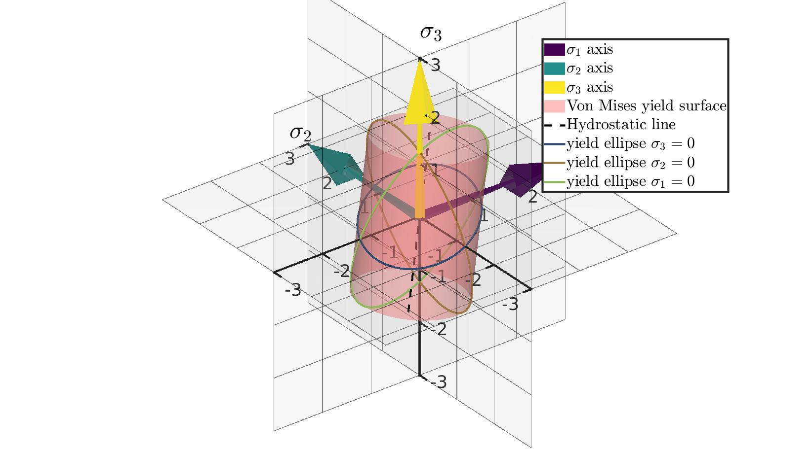

DEMO_visualization_von_mises_plasticity_01
Below is a demonstration for:
- Visualization of a Von Mises yield surface in 3D
Contents
clear; close all; clc
Plot settings.
fontSizeAxis=25; fontSizeText=35; colorSet=viridis(3); lineWidth1=1; lineWidth2=3; lineWidthAxis=3; f=3;
Control parameters
s=1; %Yield stress
Create ellipsoids
t=linspace(0,2*pi,1000); %Angular coordinates x=s*cos(t); y=s*sqrt(3).*sin(t); z=zeros(size(x)); v=[x(:) y(:) z(:)]; %Ellipse coordinates %Make cylinder "slices" ellipses by rotating above ellipse R12=euler2DCM([0 0 (45/180)*pi]); v12=v*R12; R13_1=euler2DCM([0 (90/180)*pi 0]); R13_2=euler2DCM([(135/180)*pi 0 0]); v13=v*R13_1*R13_2; R23_1=euler2DCM([(90/180)*pi 0 0]); R23_2=euler2DCM([0 (-45/180)*pi 0 ]); v23=v*R23_1*R23_2;
Creating cylinder data
% Creating input structure inputStruct.cylRadius=s; inputStruct.numRadial=250; inputStruct.cylHeight=2*sqrt(2)*s; inputStruct.numHeight=10; inputStruct.meshType='quad'; [F,V,C]=patchcylinder(inputStruct); Q=euler2DCM([0 pi/2 0]); V=V*Q; R1=euler2DCM([0 asin(1/sqrt(3)) 0]); R2=euler2DCM([0 0 -(45/180)*pi]); V=V*R1*R2; [x1,y1]=meshgrid(-f*s:1:f*s); z1=zeros(size(x1)); [x2,z2]=meshgrid(-f*s:1:f*s); y2=zeros(size(x2)); [y3,z3]=meshgrid(-f*s:1:f*s); x3=zeros(size(y3));
%Visualize hf=cFigure; hold on; h4=gpatch(F,V,'rw','none',0.5); surf(x1,y1,z1,'EdgeColor','k','faceColor',1*ones(1,3),'EdgeAlpha',0.5,'FaceAlpha',0.1,'LineWidth',lineWidth1); surf(x2,y2,z2,'EdgeColor','k','faceColor',1*ones(1,3),'EdgeAlpha',0.5,'FaceAlpha',0.1,'LineWidth',lineWidth1); surf(x3,y3,z3,'EdgeColor','k','faceColor',1*ones(1,3),'EdgeAlpha',0.5,'FaceAlpha',0.1,'LineWidth',lineWidth1); h1=quiverVec([0 0 0],[1 0 0],f*s,colorSet(1,:)); h2=quiverVec([0 0 0],[0 1 0],f*s,colorSet(2,:)); h3=quiverVec([0 0 0],[0 0 1],f*s,colorSet(3,:)); h5=plotV([-1 -1 -1; 1 1 1],'k--','LineWidth',lineWidth2); %Hydrostatic axis h6=plotV(v12,'r-','LineWidth',lineWidth2); h6.Color=(colorSet(1,:)+colorSet(2,:))/2; h7=plotV(v13,'r-','LineWidth',lineWidth2); h7.Color=(colorSet(1,:)+colorSet(3,:))/2; h8=plotV(v23,'r-','LineWidth',lineWidth2); h8.Color=(colorSet(2,:)+colorSet(3,:))/2; hAxis=gca; hAxis.XRuler.FirstCrossoverValue = 0; % X crossover with Y axis hAxis.YRuler.FirstCrossoverValue = 0; % Y crossover with X axis hAxis.ZRuler.FirstCrossoverValue = 0; % Z crossover with X axis hAxis.XRuler.SecondCrossoverValue = 0; % X crossover with Z axis hAxis.YRuler.SecondCrossoverValue = 0; % Y crossover with Z axis hAxis.ZRuler.SecondCrossoverValue = 0; % Z crossover with Y axis text(0.5+f*s,0,0,'$\sigma_1$','Interpreter','Latex','FontSize',fontSizeText); text(0,0.5+f*s,0,'$\sigma_2$','Interpreter','Latex','FontSize',fontSizeText); text(0,0,0.5+f*s,'$\sigma_3$','Interpreter','Latex','FontSize',fontSizeText); xticks(-f*s:1:f*s); yticks(-f*s:1:f*s); zticks(-f*s:1:f*s); legend([h1 h2 h3 h4 h5 h6 h7 h8],{'$\sigma_1$ axis','$\sigma_2$ axis','$\sigma_3$ axis',... 'Von Mises yield surface',... 'Hydrostatic line',... 'yield ellipse $\sigma_3=0$','yield ellipse $\sigma_2=0$','yield ellipse $\sigma_1=0$'... },'Interpreter','Latex'); axis tight; axis equal; axis vis3d; view(3); %box on; camlight headlight; axis(f*s*[-1 1 -1 1 -1 1]) set(gca,'FontSize',fontSizeAxis,'LineWidth',lineWidthAxis); gdrawnow;

GIBBON www.gibboncode.org
Kevin Mattheus Moerman, gibbon.toolbox@gmail.com
GIBBON footer text
License: https://github.com/gibbonCode/GIBBON/blob/master/LICENSE
GIBBON: The Geometry and Image-based Bioengineering add-On. A toolbox for image segmentation, image-based modeling, meshing, and finite element analysis.
Copyright (C) 2006-2022 Kevin Mattheus Moerman and the GIBBON contributors
This program is free software: you can redistribute it and/or modify it under the terms of the GNU General Public License as published by the Free Software Foundation, either version 3 of the License, or (at your option) any later version.
This program is distributed in the hope that it will be useful, but WITHOUT ANY WARRANTY; without even the implied warranty of MERCHANTABILITY or FITNESS FOR A PARTICULAR PURPOSE. See the GNU General Public License for more details.
You should have received a copy of the GNU General Public License along with this program. If not, see http://www.gnu.org/licenses/.